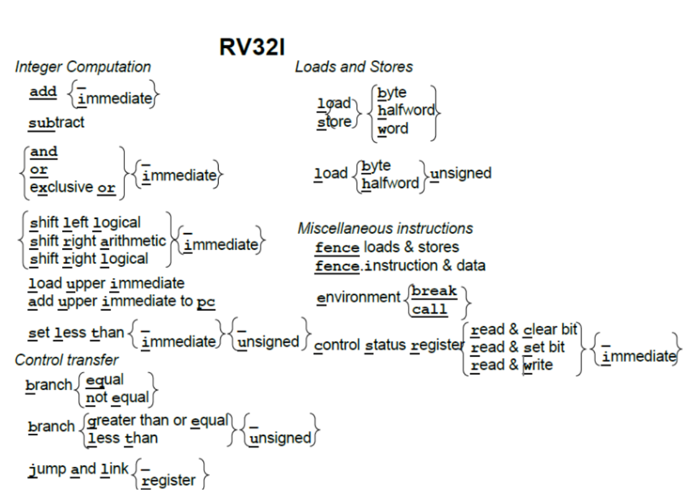

supervisor-rv
Windows 用户可在解压缩 rv.zip 之后，从 supervisor-rv 子目录中找到监控程序，但强烈建议依据上述的 URL 获得最新版本的监控程序。
进入目录后，可以看到两个文件和两个目录：
LICENSE Apache 版权申明文件； README.md 这个文件非常重要，务必仔细阅读，包含了监控程序的相关内容，以及需要实现的指令和格式； kernel 这个目录包含了监控程序的代码，务必仔细阅读； term 这个目录包含了终端程序的代码，务必仔细阅读。
kernel
term
rv32i

RV32I 里“右移”有两种：逻辑右移 SRL/SRLI 和 算术右移 SRA/SRAI。区别在于高位如何填充、以及是否保持符号。
-
SRL / SRLI（逻辑右移） 高位补 0。不看符号位，适用于无符号数或当作位移/掩码操作。 例：
0x8000_0001 SRL 1 → 0x4000_0000 -
SRA / SRAI（算术右移） 高位用原符号位（bit31）复制，保持数值的正负号。相当于对二补数做“除以 2 且向负无穷取整”。 例：
0xFFFF_FFFD (-3) SRA 1 → 0xFFFF_FFFE (-2)0x8000_0001 SRA 1 → 0xC000_0000
补充要点
…I结尾的是立即数版本；寄存器版本的移位量来自rs2。- 在 RV32 中移位量只取低 5 位（0–31），更高位被忽略。
- C 里
>>对无符号通常对应 SRL，对有符号常实现为 SRA（但标准上曾是实现相关），在汇编里需显式选 SRL 或 SRA。
下面给你一份RV32I 一页速查表（只含基础整数指令）。每行包含：助记符、类型（R/I/S/B/U/J）、编码关键字（opcode / funct3 / funct7 或说明）、语义、影响（写哪些寄存器/是否改PC；RV32I 无条件码标志位）。
RV32I 一页速查表
算术/逻辑（寄存器-寄存器，opcode=0110011）
| 指令 | 类型 | funct7 | funct3 | 语义 | 影响 |
|---|---|---|---|---|---|
ADD rd,rs1,rs2 |
R | 0000000 |
000 |
rd = rs1 + rs2 | 写 rd |
SUB rd,rs1,rs2 |
R | 0100000 |
000 |
rd = rs1 - rs2 | 写 rd |
SLL rd,rs1,rs2 |
R | 0000000 |
001 |
rd = rs1 << (rs2[4:0]) | 写 rd |
SLT rd,rs1,rs2 |
R | 0000000 |
010 |
rd = (rs1 < rs2) 有符号 | 写 rd |
SLTU rd,rs1,rs2 |
R | 0000000 |
011 |
rd = (rs1 < rs2) 无符号 | 写 rd |
XOR rd,rs1,rs2 |
R | 0000000 |
100 |
rd = rs1 ^ rs2 | 写 rd |
SRL rd,rs1,rs2 |
R | 0000000 |
101 |
逻辑右移 | 写 rd |
SRA rd,rs1,rs2 |
R | 0100000 |
101 |
算术右移 | 写 rd |
OR rd,rs1,rs2 |
R | 0000000 |
110 |
位或 | 写 rd |
AND rd,rs1,rs2 |
R | 0000000 |
111 |
位与 | 写 rd |
算术/逻辑立即数（opcode=0010011）
| 指令 | 类型 | 额外字段 | funct3 | 语义 | 影响 |
|---|---|---|---|---|---|
ADDI rd,rs1,imm12 |
I | — | 000 |
rd = rs1 + imm | 写 rd |
SLTI rd,rs1,imm12 |
I | — | 010 |
rd = (rs1 < imm) 有符号 | 写 rd |
SLTIU rd,rs1,imm12 |
I | — | 011 |
rd = (rs1 < imm) 无符号 | 写 rd |
XORI rd,rs1,imm12 |
I | — | 100 |
rd = rs1 ^ imm | 写 rd |
ORI rd,rs1,imm12 |
I | — | 110 |
rd = rs1 | imm | 写 rd |
ANDI rd,rs1,imm12 |
I | — | 111 |
rd = rs1 & imm | 写 rd |
SLLI rd,rs1,shamt |
I | funct7=0000000 |
001 |
左移 shamt(0–31) | 写 rd |
SRLI rd,rs1,shamt |
I | funct7=0000000 |
101 |
逻辑右移 | 写 rd |
SRAI rd,rs1,shamt |
I | funct7=0100000 |
101 |
算术右移 | 写 rd |
载入（opcode=0000011）
| 指令 | 类型 | funct3 | 语义（地址 = rs1 + imm12） | 影响 |
|---|---|---|---|---|
LB rd,imm(rs1) |
I | 000 |
读 8 位，符号扩展到 32 | 写 rd |
LH rd,imm(rs1) |
I | 001 |
读 16 位，符号扩展 | 写 rd |
LW rd,imm(rs1) |
I | 010 |
读 32 位 | 写 rd |
LBU rd,imm(rs1) |
I | 100 |
读 8 位，无符号零扩展 | 写 rd |
LHU rd,imm(rs1) |
I | 101 |
读 16 位，无符号零扩展 | 写 rd |
存储（opcode=0100011）
| 指令 | 类型 | funct3 | 语义（地址 = rs1 + imm12[分裂成 S 型]） | 影响 |
|---|---|---|---|---|
SB rs2,imm(rs1) |
S | 000 |
写 rs2[7:0] | 内存 |
SH rs2,imm(rs1) |
S | 001 |
写 rs2[15:0] | 内存 |
SW rs2,imm(rs1) |
S | 010 |
写 rs2[31:0] | 内存 |
跳转/分支
| 指令 | 类型 | opcode | funct3 | 语义 | 影响 |
|---|---|---|---|---|---|
JAL rd,offset |
J | 1101111 |
— | rd = pc+4；pc += signext(offset) | 写 rd、改 PC |
JALR rd,rs1,imm |
I | 1100111 |
000 |
t = (rs1+imm)&\~1；rd = pc+4；pc = t | 写 rd、改 PC |
BEQ rs1,rs2,off |
B | 1100011 |
000 |
rs1==rs2 则 pc += off | 改 PC |
BNE rs1,rs2,off |
B | 1100011 |
001 |
不等则跳 | 改 PC |
BLT rs1,rs2,off |
B | 1100011 |
100 |
有符号 < 则跳 | 改 PC |
BGE rs1,rs2,off |
B | 1100011 |
101 |
有符号 ≥ 则跳 | 改 PC |
BLTU rs1,rs2,off |
B | 1100011 |
110 |
无符号 < 则跳 | 改 PC |
BGEU rs1,rs2,off |
B | 1100011 |
111 |
无符号 ≥ 则跳 | 改 PC |
立即数装入/PC 相对（U 型）
| 指令 | 类型 | opcode | 语义 | 影响 |
|---|---|---|---|---|
LUI rd,imm20 |
U | 0110111 |
rd = imm20 << 12 | 写 rd |
AUIPC rd,imm20 |
U | 0010111 |
rd = pc + (imm20 << 12) | 写 rd |
杂项 / 屏障 / 系统
| 指令 | 类型 | opcode | funct3 | 语义 | 影响 | |
|---|---|---|---|---|---|---|
FENCE pred,succ |
I | 0001111 |
000 |
内存屏障（次序约束） | 无寄存器；顺序影响 | |
FENCE.I |
I | 0001111 |
001 |
指令取指与数据可见性同步 | 无寄存器 | |
ECALL |
I | 1110011 |
000 |
环境调用 | 进入环境；PC 转移 | |
EBREAK |
I | 1110011 |
000 |
断点 | 进入调试；PC 转移 | |
CSRRW rd,csr,rs1 |
I | 1110011 |
001 |
交换：t=CSR; CSR=rs1; rd=t | 写 rd/CSR | |
CSRRS rd,csr,rs1 |
I | 1110011 |
010 |
读并置位：CSR | = rs1 | 写 rd/CSR |
CSRRC rd,csr,rs1 |
I | 1110011 |
011 |
读并清位：CSR &= \~rs1 | 写 rd/CSR | |
CSRRWI rd,csr,uimm |
I | 1110011 |
101 |
立即数版本（写 CSR=uimm） | 写 rd/CSR | |
CSRRSI rd,csr,uimm |
I | 1110011 |
110 |
立即数置位 | 写 rd/CSR | |
CSRRCI rd,csr,uimm |
I | 1110011 |
111 |
立即数清位 | 写 rd/CSR |
备注
x0恒为 0；对rd=x0的写入被丢弃。- RV32I 没有条件码标志位（ZF、CF 等都不存在）；所有比较通过结果寄存器或分支立即判断完成。
- 立即数字段：I/S/B 为 12 位有符号；U/J 为 20 位（拼接时按各自编码位布局）；移位量
shamt为 5 位。- 分支/跳转位移按 2 字节对齐（最低位为 0）。
迷你示例：PC 相对寻址 + 条件分支
# 以 AUIPC 做基址 + LW 读常量表
AUIPC a0, %pcrel_hi(table) # a0 = pc + hi20(table-pc)
LW t0, %pcrel_lo(table)(a0) # t0 = *(a0 + lo12)
ADDI t1, x0, 100
BLT t0, t1, less # if t0 < 100 跳转
ADDI a1, x0, 1 # not less
J done
less:
ADDI a1, x0, -1
done:
EBREAK
table:
.word 42
如果你希望，我也可以把这份速查表导出成 A4/PDF（带更紧凑排版与页眉页脚），或者按你日常使用的寄存器别名（a0–a7, t0–t6, s0–s11）再补一张寄存器速查。
位置与作用（以 RV32I 为例）
简短说：
- opcode：7 位“主操作码”，在指令最低位
[6:0]。它先决定指令格式（R/I/S/B/U/J 之一）和大类（如“寄寄算术”“载入”“存储”“分支”“系统”等）。 - funct3：3 位“功能码”，在
[14:12]。在同一个 opcode 之下进一步区分具体子操作（如分支条件、载入/存储数据宽度、算术/逻辑是哪一种等）。 - funct7：7 位“功能码”，在最高位
[31:25]。在某些 R 型/移位类指令里再细分操作（比如 ADD vs SUB、SRL vs SRA）。很多非 R 型指令把这 7 位拿去做立即数的一部分，因此并不总是存在“funct7”的意义。
R 型（寄存器-寄存器算术）
31 25 24 20 19 15 14 12 11 7 6 0
[ funct7 ][ rs2 ][ rs1 ][funct3][ rd ][ opcode]
opcode=0110011表示“整数寄寄运算”。-
funct3指出是哪一组操作；funct7再细分： -
ADD：funct7=0000000、funct3=000 SUB：funct7=0100000、funct3=000（与 ADD 仅 funct7 不同）SRL：funct7=0000000、funct3=101SRA：funct7=0100000、funct3=101
I 型（算术立即数 / 载入 / JALR / CSR）
31 20 19 15 14 12 11 7 6 0
[ imm[11:0] ][ rs1 ][funct3][ rd ][ opcode]
- 这里没有 funct7，这些高位是立即数。
opcode=0010011（算术立即数）时，funct3区分操作：000=ADDI，110=ORI，111=ANDI 等；- 移位立即数用
funct3=001/101再用“伪 funct7”位区分：0000000=SLLI/SRLI，0100000=SRAI。 opcode=0000011（载入）时，funct3指定宽度：000=LB，001=LH，010=LW，100=LBU，101=LHU。opcode=1100111（JALR）固定funct3=000。opcode=1110011（系统/CSR）时，funct3区分 CSRRW/CSRRS/CSRRC 以及它们的立即数版本。
S 型（存储）
31 25 24 20 19 15 14 12 11 7 6 0
[imm[11:5]][ rs2 ][ rs1 ][funct3][imm[4:0]][opcode]
opcode=0100011；funct3指定宽度：000=SB，001=SH，010=SW。
B 型（条件分支）
31 30 25 24 20 19 15 14 12 11 8 7 6 6 0
[imm[12|10:5]][ rs2 ][ rs1 ][funct3][imm[4:1|11]][opcode]
opcode=1100011；funct3指定条件：000=BEQ，001=BNE，100=BLT，101=BGE，110=BLTU，111=BGEU。
U/J 型（高位立即数 / 立即跳转）
U: 31 12 11 7 6 0 J: 31 30 21 20 19 12 11 7 6 0
[ imm[31:12] ][ rd ][ opcode] [imm[20|10:1|11|19:12]][ rd ][opcode]
- 没有 funct3/funct7。
LUIopcode=0110111，AUIPCopcode=0010111；JALopcode=1101111。
小结
- opcode：决定“这是一大类什么指令 + 用什么格式解码”。
- funct3 / funct7：在该大类下精确到哪条具体指令；R 型大量使用两者组合；其它格式多用
funct3，高位则用于立即数。 - 它们三者一起构成了解码表的关键字段：同一 opcode + funct3 +（可选）funct7 ≈ 一条唯一的指令。